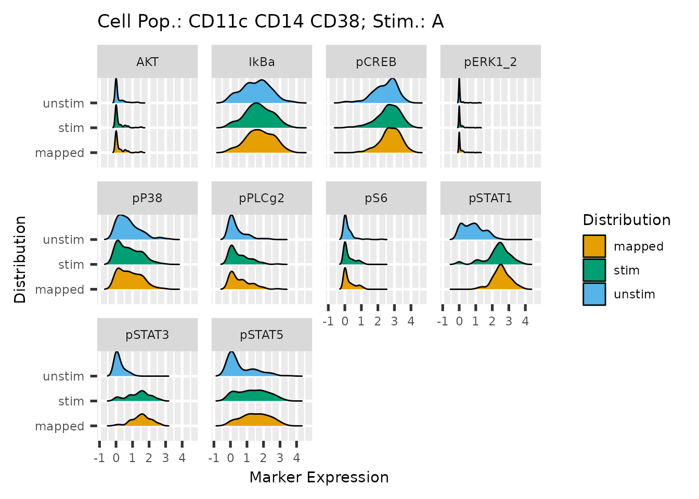

The primary function HDStIM() in the HDStIM package follows a heuristic approach to group cells into responding and non-responding. For a combination of cell population and stimulation type (e.g., CD127+ T-helper cells and interferon-alpha), HDStIM() starts by performing K-means clustering on the combined set of cells from stimulated and unstimulated samples. K-means clustering is performed on combined expression data of all the state (signaling/intracellular) markers. Upon clustering using a contingency table as shown below, a Fisher’s exact test determines the effect size and the statistical significance of partitioning. Cells from the combinations that pass the Fisher’s exact test (p-value < 0.05) are considered responding. An optional UMAP can also be calculated to visually verify the cell partitioning in responding and non-responding groups by using auxiliary plotting scripts provided in the package.
In addition to an auxiliary script to plot UMAPs, the package also comes with two other plotting scripts for K-means clustering and Fisher’s exact test and state marker density before and after mapping.
An example of the contingency table used for Fisher’s exact test.
matrix(c(60, 40, 20, 80),nrow = 2, ncol = 2,
dimnames = list(c("Cluster1", "Cluster2"), c("Stim", "Unstim")))
#> Stim Unstim
#> Cluster1 60 20
#> Cluster2 40 80To Run The Main HDStIM Function
As stated above, HDStIM() is the primary function of the HDStIM package. We will use the example data set chi11 (from mass cytometry) included in the package.
Note:chi11 is a minimal dataset included for unit testing only. Therefore, it does not represent a typical mass/flow cytometry assay.
library(HDStIM)
mapped_data <- HDStIM(chi11$expr_data, chi11$state_markers,
chi11$cluster_col, chi11$stim_label,
chi11$unstim_label, seed_val = 123,
umap = TRUE, umap_cells = 500,
verbose = FALSE)
class(mapped_data)
#> [1] "list"
attributes(mapped_data)
#> $names
#> [1] "response_mapping_main" "stacked_bar_plot_data" "state_markers"
#> [4] "cellpop_col" "stim_label" "unstim_label"
#> [7] "seed_val" "all_fisher_p_val" "all_k_means_data"
#> [10] "umap_plot_data" "umap" "umap_cells"Output
HDStIM() returns a list with the mapped expression data, data to plot stacked bar plots to visualize the K-means and Fisher’s exact test results, and data to plot the optional UMAPs. The list also includes tables containing statistical information from K-means and Fisher’s exact test and other information passed as the function attributes.
head(mapped_data$response_mapping_main)
#> # A tibble: 6 × 41
#> cluster_id sample_id condition patient_id stim_type cell_population CD45
#> <dbl> <chr> <chr> <chr> <chr> <chr> <dbl>
#> 1 79 CHI-011_1_2_G CHI CHI-011 G CD11c CD14 CD38 3.48
#> 2 69 CHI-011_2_4_G CHI CHI-011 G CD11c CD14 CD38 2.22
#> 3 69 CHI-011_4_13_G CHI CHI-011 G CD11c CD14 CD38 3.03
#> 4 79 CHI-011_4_11_G CHI CHI-011 G CD11c CD14 CD38 2.82
#> 5 69 CHI-011_2_5_G CHI CHI-011 G CD11c CD14 CD38 2.07
#> 6 69 CHI-011_1_1_G CHI CHI-011 G CD11c CD14 CD38 3.39
#> # … with 34 more variables: CD7 <dbl>, CD19 <dbl>, pPLCg2 <dbl>, CD4 <dbl>,
#> # IgD <dbl>, CD20 <dbl>, CD25 <dbl>, pSTAT5 <dbl>, CD123 <dbl>, AKT <dbl>,
#> # pSTAT1 <dbl>, CD27 <dbl>, pP38 <dbl>, CD24 <dbl>, pSTAT3 <dbl>,
#> # CD11c <dbl>, CD14 <dbl>, CD56 <dbl>, IkBa <dbl>, pCREB <dbl>, CD16 <dbl>,
#> # CD38 <dbl>, CD8 <dbl>, CD45RA <dbl>, CD3 <dbl>, pERK1_2 <dbl>,
#> # HLA_DR <dbl>, pS6 <dbl>, CD127 <dbl>, ncount <int>, k_cluster_id <int>,
#> # responding_cluster <int>, response_status <chr>, comb_no <int>
head(mapped_data$stacked_bar_plot_data)
#> # A tibble: 6 × 7
#> cell_population stim_type f_p_val stim_clust stim_status k_cluster
#> <chr> <chr> <dbl> <dbl> <chr> <chr>
#> 1 CD11c CD14 CD38 A 3.05e-26 1 unstim cluster1
#> 2 CD11c CD14 CD38 A 3.05e-26 1 unstim cluster2
#> 3 CD11c CD14 CD38 A 3.05e-26 1 stim cluster1
#> 4 CD11c CD14 CD38 A 3.05e-26 1 stim cluster2
#> 5 CD19 CD20 CD45RA HLA-DR C… A 5.56e-18 2 unstim cluster1
#> 6 CD19 CD20 CD45RA HLA-DR C… A 5.56e-18 2 unstim cluster2
#> # … with 1 more variable: cell_count_perc <dbl>
head(mapped_data$umap_plot_data)
#> # A tibble: 6 × 8
#> cell_population stim_type condition tot_of_cells no_of_cells UMAP1 UMAP2
#> <chr> <chr> <chr> <chr> <chr> <dbl> <dbl>
#> 1 CD11c CD14 CD38 A CHI 200 200 1.00 0.0315
#> 2 CD11c CD14 CD38 A CHI 200 200 1.58 -1.43
#> 3 CD11c CD14 CD38 A CHI 200 200 -1.76 1.43
#> 4 CD11c CD14 CD38 A CHI 200 200 0.823 -0.670
#> 5 CD11c CD14 CD38 A CHI 200 200 0.958 -1.07
#> 6 CD11c CD14 CD38 A CHI 200 200 -1.15 -0.482
#> # … with 1 more variable: response_status <chr>
head(mapped_data$all_fisher_p_val)
#> stim_type cell_population stim_clust1 stim_clust2 unstim_clust1
#> 1 A CD11c CD14 CD38 83 17 11
#> 2 A CD11c HLA-DR 43 57 50
#> 3 A CD19 CD20 CD45RA HLA-DR CD24 23 77 83
#> 4 A CD3 CD27 CD127 35 65 32
#> 5 A CD3 CD4 CD27 CD45RA 34 66 42
#> 6 A CD3 CD4 HLA-DR 37 63 39
#> unstim_clust2 estimate p.value conf.low conf.high
#> 1 89 38.31592946 3.052288e-26 16.41025641 97.9574110
#> 2 50 0.75546384 3.950464e-01 0.41598165 1.3672058
#> 3 17 0.06232828 5.555794e-18 0.02850666 0.1296101
#> 4 68 1.14345766 7.645958e-01 0.60968684 2.1500051
#> 5 58 0.71262870 3.078444e-01 0.38474999 1.3129671
#> 6 61 0.91899062 8.842353e-01 0.49842428 1.6921035
#> method alternative f_p_adj
#> 1 Fisher's Exact Test for Count Data two.sided 2.441830e-25
#> 2 Fisher's Exact Test for Count Data two.sided 7.023047e-01
#> 3 Fisher's Exact Test for Count Data two.sided 2.539791e-17
#> 4 Fisher's Exact Test for Count Data two.sided 9.212285e-01
#> 5 Fisher's Exact Test for Count Data two.sided 6.156888e-01
#> 6 Fisher's Exact Test for Count Data two.sided 9.781822e-01
head(mapped_data$all_k_means_data)
#> stim_type cell_population pPLCg2 pSTAT5 AKT
#> 1 A CD11c CD14 CD38 0.6036923 1.5150197 0.19882950
#> 2 A CD11c CD14 CD38 0.3433208 0.5100987 0.14467489
#> 3 A CD11c HLA-DR 0.2754466 0.2628448 0.08187613
#> 4 A CD11c HLA-DR 0.9878153 0.5947371 0.10871637
#> 5 A CD19 CD20 CD45RA HLA-DR CD24 0.2804838 0.2853633 0.07871608
#> 6 A CD19 CD20 CD45RA HLA-DR CD24 0.3600085 1.9650785 0.12718000
#> pSTAT1 pP38 pSTAT3 IkBa pCREB pERK1_2 pS6 size
#> 1 2.46662032 0.85286553 1.4007937 1.8315034 2.752456 0.10329694 0.27964780 94
#> 2 0.80050991 0.69575908 0.2100968 1.4439438 2.346255 0.04306572 0.16080807 106
#> 3 0.09136274 0.03271188 0.0532651 0.8501084 0.437598 0.03960397 0.07132055 93
#> 4 0.65155894 0.13219535 0.2322881 2.4118800 2.118350 0.02017302 0.12388073 107
#> 5 0.51540424 0.12034285 0.1396368 2.7656495 1.401279 0.13669583 0.10065605 106
#> 6 1.79297154 0.21265052 0.7480344 3.1434614 1.702514 0.20580153 0.18568148 94
#> withinss cluster
#> 1 342.6724 1
#> 2 340.0997 2
#> 3 174.5916 1
#> 4 266.5471 2
#> 5 255.0538 1
#> 6 236.2004 2To Plot Diagnostic Figures
Plots Explaining K-means Clustering And Fisher’s Exact Test
Using the stacked_bar_plot_data, plot_K_Fisher() generates bar plots showing the percentage of cells from the stimulated and unstimulated samples clustered in the two K-means clusters a given cell population and stimulation type.
plot_K_Fisher() returns a list of ggplot objects. If the path is specified, it can also render and save the plots in PNG format.
k_plots <- plot_K_Fisher(mapped_data, path = NULL, verbose = FALSE)
k_plots[[1]]
UMAP Plots To Visually Inspect Responding and Non-Responding Cell Mapping
Note: You can only generate these plots if you have asked UMAPs to be calculated in the HDStIM() function.
UMAP plots can be helpful for visually inspecting how well HDStIM() has mapped responding vs. non-responding cells for a cell population and stimulation type. plot_umap() also returns a list of ggplot objects and if the path is specified, it will render and save the plots in PNG format.
u_plots <- plot_umap(mapped_data, path = NULL, verbose = FALSE)
u_plots[[1]]Distribution Plots for Individual State Marker before And After Mapping
For each state/signaling markers distribution plots shows the kernel density estimation of the pre HDStIM() data from both stimulated and unstimulated samples along with the density from cells from stimulated samples mapped as responding. plot_exprs() also returns a list of ggplot objects and if the path is specified, it will render and save the plots in PNG format.
e_plots <- plot_exprs(mapped_data, path = NULL,verbose = FALSE)
library(ggplot2)
e_plots[[1]] +
theme(text = element_text(size = 11))
#> Picking joint bandwidth of 0.0611
#> Picking joint bandwidth of 0.274
#> Picking joint bandwidth of 0.21
#> Picking joint bandwidth of 0.0301
#> Picking joint bandwidth of 0.23
#> Picking joint bandwidth of 0.191
#> Picking joint bandwidth of 0.102
#> Picking joint bandwidth of 0.179
#> Picking joint bandwidth of 0.172
#> Picking joint bandwidth of 0.288
To Rank State/Signaling Markers According To Their Contribution To The Response
marker_ranking_boruta() function runs Boruta on the stimulation - cell population combinations that passed the Fisher’s exact test to rank the markers according to their contribution to the response. The function returns a list with a tibble containing attribute statistics calculated by Boruta and ggplot objects. If the path is not NULL, plots are also rendered and saved in the specified folder in PNG format.
m_ranks <- marker_ranking_boruta(mapped_data, path = NULL, n_cells = NULL,
max_runs = 100, seed_val = 123,
verbose = FALSE)
head(m_ranks$attribute_stats)
#> # A tibble: 6 × 9
#> stim_type cell_population state_marker meanImp medianImp minImp maxImp
#> <chr> <chr> <fct> <dbl> <dbl> <dbl> <dbl>
#> 1 A CD11c CD14 CD38 AKT 0.322 0.488 -1.28 1.26
#> 2 A CD11c CD14 CD38 pP38 0.815 0.803 -0.827 2.07
#> 3 A CD11c CD14 CD38 pERK1_2 2.29 2.27 -0.613 5.53
#> 4 A CD11c CD14 CD38 pS6 2.75 2.74 0.168 4.87
#> 5 A CD11c CD14 CD38 pPLCg2 2.85 2.99 0.00199 5.13
#> 6 A CD11c CD14 CD38 pCREB 4.56 4.61 1.40 7.05
#> # … with 2 more variables: normHits <dbl>, decision <chr>
m_ranks$plots[[1]]